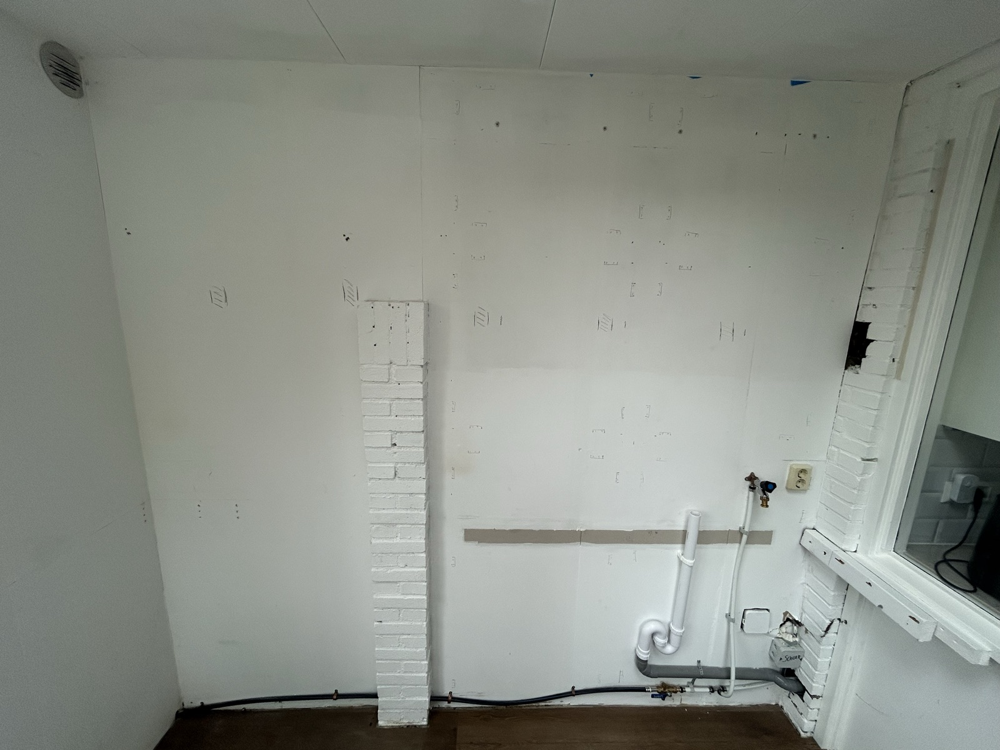

1
Mark out
Scan the ceiling, the exterior wall and the back wall with the detector, and mark joists, battens and cables. Mark the stud left edges on the floor and the ceiling.
detectorwaterpaspencil0 · 393 · 786 · 1050 · 1455 · 1861 · 2211 · 2561
Insulated stud wall in front of the gips back wall. The frame holds itself up and is fixed into the floor, the ceiling joists, the brick pillar and the brick kitchen wall. A 700 × 1180 bay by the kitchen wall stays open, so the existing tap, sockets and pipes stay where they are. Hornbach cuts every piece to final size. All sizes are in millimetres.

The new wall sticks out 112 mm from the back wall, or 125 mm once the gips is on. Measure from the back wall to the nearest edge of the grille at the top left. If it's less than about 130 mm, the wall would cover part of it. Tell me before you build that corner.
The Clio takes 2.40 m, so full-length studs are selected. Two-piece studs stay here as a backup, for example if Hornbach is out of 300 cm bars. The switch changes the frame drawing, the bar plan and the shopping list.
Studs V1–V6 are each two pieces joined at height 1240, just above the first noggins. A flat steel plate goes on the front and back face of each joint. The noggins sit on the side faces, so they don't get in the way. The OSB in the middle row runs across the joints and holds them in line.
Studs V1–V6 are each one piece of 2359, from floor plate to top plate. This is the strongest and quickest option.
The first noggins have their bottom face at 1180, and the second row at 1811. The open bay by the kitchen wall has no floor plate (pipes) and no stud at the bottom. V6 frames its left side. A header at 1180 spans over it, and the short studs V7 and V8 stand on that header. The frame is built level with its top at 2447. The thin band above it is the gap to the sloping ceiling, filled with packers. The blue dashed lines are the OSB joints. Drawn to scale: 1 drawing unit = 1 mm.
Show this to the saw operator. Tap a bar once it's cut. The hatched part is offcut. Write the code on each piece with a marker. Bar 10 is mostly spare, for blocking and mistakes.
| Code | Length | Qty | Where it goes |
|---|---|---|---|
| S-lo | 1196 | 6 | Lower stud halves V1–V6, floor plate → joint at 1240 |
| S-up | 1163 | 6 | Upper stud halves V1–V6, joint at 1240 → top plate |
| S | 2359 | 6 | Full studs V1–V6, floor plate → top plate |
| SH | 1178 | 2 | Short studs V7 and V8, header → top plate |
| H | 697 | 1 | Header over the open bay, bottom face at 1180, V6 → kitchen wall |
| TP1 | 1069 | 1 | Top plate, exterior wall → centre of V4 |
| TP2 | 811 | 1 | Top plate, V4 centre → V6 centre |
| TP3 | 719 | 1 | Top plate, V6 centre → kitchen wall |
| BP1 | 826 | 1 | Floor plate, exterior wall → pillar |
| BP2 | 853 | 1 | Floor plate, pillar → open bay (runs under V6) |
| N1 | 348 | 4 | Noggins V1–V2 and V2–V3, both rows |
| N2 | 360 | 4 | Noggins V4–V5 and V5–V6, both rows |
| N3 | 218 | 1 | Noggin above the pillar, V3–V4, row 2 |
| N4 | 305 | 2 | Noggins V6–V7 and V7–V8, row 2 |
Only 270 cm bars in stock? Take 11 bars: one stud (or two halves) per bar for 6 bars, and the rest spread over the other 5.
Sheet 1 gives the three tall bottom panels. Sheets 2 and 3 are first cut into strips across the long side, then each strip is cut to width. Panel codes match the wall layout below: column A–D, row 1 at the bottom. Sizes are wall width × wall height. Tap a sheet once it's cut. 2440 × 1220 sheets work too, with the same cuts.
Gaps: 8 mm at the floor, 3 mm at joints and walls. Row 3 ends flush with the top of the frame at 2447. The gap above it (3 mm at the exterior wall, 26 mm at the kitchen wall) gets a ceiling trim strip at the end. C1 ends flush with the inside face of V6, so the left edge of the open bay is clean. D2 sits in row 2 like the other panels, so the bottom 24 mm of the header shows above the bay. Paint it or cover it with a lat.
12.5 mm moisture-resistant gips (the green H2 board, vochtwerend) screwed onto the finished OSB. The frame and OSB plan stay exactly as they are. The OSB is solid backing everywhere, so the gips can be screwed anywhere, and its joints are placed at least 150 mm away from the OSB joints so they don't crack. Every piece fits inside a 1200 × 600 board, so they fit in the Clio.
| Code | Size | Where |
|---|---|---|
| G1 | 448 × 992 | Row 1, exterior wall |
| G2, G3 | 600 × 992 | Row 1 |
| G4 | 264 × 992 | Row 1, ends flush with the open-bay edge |
| G5 | 1198 × 600 | Row 2, exterior wall |
| G6 | 1200 × 600 | Row 2, with a 486 × 165 notch cut out of the bottom-right corner for the open bay |
| G7 | 197 × 435 | Row 2, above the open bay at the kitchen wall (from the G4 offcut) |
| G8 | 448 × 845 | Row 3, exterior wall |
| G9–G11 | 600 × 845 | Row 3 |
| G12 | 347 × 845 | Row 3, kitchen wall |
| G13 | 112 × 1157 | Return strip on the inside face of V6, in the open bay |
| G14 | 112 × 683 | Return strip under the header, in the open bay |
Score the paper with a sharp knife along a straight edge, snap the board over a table edge, then cut the paper on the back. Smooth the edge with a gips rasp. You can cut every piece at home.
The wall becomes 124.5 mm thick (94 + 18 + 12.5). Check that the kitchen window frame and sill are at least 130 mm from the back wall.
The floor, the ceiling joists, the pillar and the kitchen wall carry the frame. Timber-to-timber joints use 90° angle brackets (hoekankers). The OSB screwed over everything makes it one stiff panel.
| Where | Piece | Fixing |
|---|---|---|
| Studs ↔ plates | V1–V8 | Two angle brackets per stud end, one on each side face. Against the pillar or kitchen wall only the free side gets one. |
| Noggins ↔ studs | N1–N4 | One angle bracket under each end. Screw the bracket to the stud at the right height first, then drop the noggin on it. |
| Floor | BP1, BP2 | Plug 10×100 through the plate every ~50 cm, between the studs. BP2 stops at the open bay, clear of the pipes. |
| Ceiling joists | TP1–3 | The ceiling slopes, so the gap above the level plate grows from ~3 mm (exterior wall) to ~26 mm (kitchen wall). Put stacked packers at every joist, then 6×160 up through plate and packers into the joist. If the joists run parallel to the wall and the plate misses them: spring toggles through the gips every ~40 cm. |
| Pillar sides (brick) | V3, V4 | 3 × plug 10×100 each, horizontal through the 44 side. Drill at most 55 mm into the brick. |
| Kitchen wall (brick) | V8, H | V8: 2 × plug 10×100. Header: an angle bracket on the brick with 6 mm plugs and 5×50 screws. |
| Exterior wall (gips) | V1 | 6×120 into the battens behind the gips (detector). No batten found: 4 spring toggles. |
Every timber joint uses a 90° angle bracket (hoekanker 70×70×55, 2.5 mm) with 5×35 anchor screws, 4 per leg. Brackets always go on the side faces of the timber, inside the 94 mm depth. Never put one on the front face, where the OSB goes, or on the back face, against the wall.
The blue parts are the ones added in each step. Lay out the pieces for a step, check them against the parts list, then build.
Scan the ceiling, the exterior wall and the back wall with the detector, and mark joists, battens and cables. Mark the stud left edges on the floor and the ceiling.
Check the floor with the waterpas and shim under the plates if it slopes, so the frame starts level. Lay BP1 (exterior wall → pillar) and BP2 (pillar → 1905, where the open bay starts) tight against the back wall. Drill through the plates into the floor and plug them every ~50 cm, between the stud marks.
Keep the top plate level, not following the ceiling. Its top sits at 2447, straight above the floor plate. The gap to the ceiling grows from ~3 mm at the exterior wall to ~26 mm at the kitchen wall. Stack packers in it at every joist and screw through them into the joist.
Stand each stud on its mark, check it's plumb, and fix it with a bracket on each side at the top and bottom. V3 and V4 go tight against the pillar: brackets on the free side only, plus 3 plugs each sideways into the brick. Screw V1 into the battens behind the gips.
Screw a bracket to V6 with its top at 1180, and one to the kitchen-wall brick. Drop the header H onto them and screw up into it. Stand V7 and V8 on the header, with brackets at the top and bottom. Plug V8 into the kitchen wall.
In every bay, screw a bracket to both studs with its top at 1180 (row 1) and 1811 (row 2). Drop the noggin on and screw up into it. Row 1 skips the pillar bay and the open bay. N3 goes above the pillar in row 2.
Finish any new pipe or socket work first. Press glass wool into every closed bay, snug but not crushed. Screw the 218 × 150 OSB packing piece to the pillar face, centred at 1202, so the OSB joint has something behind it.
Stand A1, B1 and C1 on 8 mm spacers, with 3 mm gaps between them. C1 ends flush with V6 at the open bay. Screw every 150 mm along the edges and every 300 mm in the middle.
Row 2 first (A2, B2, C2, D2; D2 sits on the header), then row 3, ending flush with the top of the frame. The frame and OSB are done. Paint the OSB for now if you want, and buy the gips later.
Cut the pieces at home: score, snap, cut the back paper. Screw them on row by row from the bottom: 10 mm above the floor, 5 mm from the side walls, the top row flush with the top of the OSB, edges butted tight. Screws every 200 mm along the edges and 300 mm in the middle, heads just below the paper without tearing it.
Screw the return strips G13 on the inside face of V6 and G14 under the header. Fix corner bead over the two outside edges with filler, and press it straight.
Fill the joints, bed the tape in, and let it dry. Then do two more thin, wider coats, letting each one dry. Sand smooth, cover the screw heads, caulk the joints with the walls, glue the ceiling trim over the gap at the top, then prime and paint. Fit the skirting.